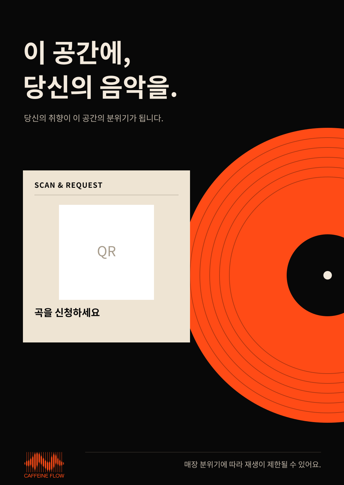

<!doctype html><html lang="ko"><meta charset="utf-8"><meta name="viewport" content="width=device-width,initial-scale=1"><title>Caffeine Flow · 매장 안내판 시안</title>
<style>body{margin:0;padding:24px;background:#eee;color:#222;font:16px system-ui,sans-serif}main{max-width:600px;margin:auto}nav{display:flex;gap:8px;flex-wrap:wrap;margin:16px 0}button{padding:10px 14px;border:1px solid #bbb;border-radius:6px;cursor:pointer}button[aria-pressed=true]{background:#222;color:white}img{display:block;width:100%;height:auto}p{line-height:1.6}</style>
<main><h1>매장 안내판 시안</h1><nav aria-label="시안 선택"><button aria-pressed="true" data-file="01-record-orange.svg">1 · 레코드</button><button aria-pressed="false" data-file="02-ticket-burgundy.svg">2 · 버건디</button><button aria-pressed="false" data-file="03-ticket-forest.svg">3 · 포레스트</button><button aria-pressed="false" data-file="04-ticket-blue.svg">4 · 블루</button></nav><p>디자인 검토용입니다. QR은 자리 표시이며 스캔되지 않습니다.</p></main>
<script>const image=document.getElementById('sign');document.querySelectorAll('button').forEach(b=>b.addEventListener('click',()=>{document.querySelectorAll('button').forEach(x=>x.setAttribute('aria-pressed',String(x===b)));image.src=b.dataset.file;image.alt=b.textContent+' 안내판';}));</script></html>
